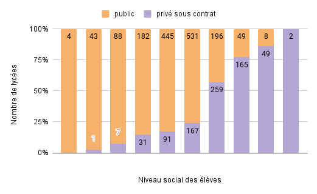
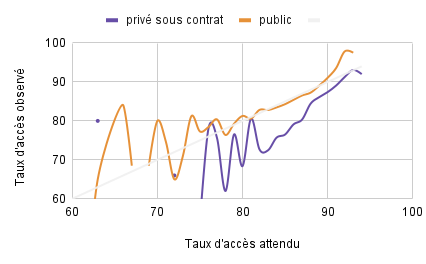
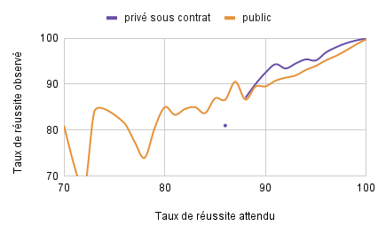
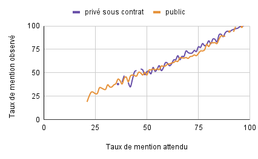
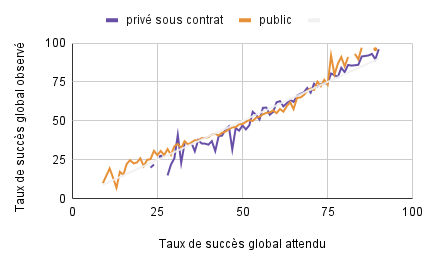

La valeur ajoutée d'un lycée est un indicateur proposé par le Ministère de l'Education Nationale et de la Jeunesse dans le but d'identifier s'il a fait mieux, pareil ou moins bien que la moyenne française étant donné le profil des élèves qui étaient entrés en seconde en prenant en compte :
- l'origine sociale
- l'âge d'entrée en seconde
- la moyenne aux épreuves écrites du brevet
- le sexe
Trois indicateurs sont évalués :
- Le taux d'accès au bac : sur 100 élèves entrés en seconde dans ce lycée, combien sont sortis avec le bac
- Le taux de réussite : sur 100 élèves présentés à l'examen du bac, combien l'ont obtenu
- Le taux de mentions : sur 100 élèves ayant obtenu le bac, combien ont eu une mention
A partir de ces 3 indicateurs, nous pouvons calculer pour chaque lycée le taux d'élèves entrés en seconde obtenant le bac avec mention.
La couleur des marqueurs indique la valeur ajoutée "globale" du lycée : s'il a fait mieux ou moins bien qu'un lycée moyen étant donné le profil des élèves entrés en seconde.
Le nombre dans le marqueur correspond au taux d'élèves entrés en seconde obtenant le bac avec mention.
Il est possible de sélectionner les établissements "Publics" / "Privés sous contrats" via les calques en haut à droite.
Données et méthodologie de calcul de la Valeur Ajoutée : Data.Gouv.Fr téléchargées le 17 novembre 2023
Les 14 lycées qui "apportent le plus de valeur"
| Lycée | Ville | Secteur | Taux de réussite global |
|---|---|---|---|
| LYCEE LOUISE WEISS (GENERAL ET TECHNO.) | STE MARIE AUX MINES | public | 80% (Attendu : 52%) |
| LYCEE TOULOUSE LAUTREC | VAUCRESSON | public | 72% (Attendu : 44%) |
| LYCEE NOTRE DAME | PELTRE | privé sous contrat | 59% (Attendu : 31%) |
| LYCEE CHARLES DE FOUCAULD | PARIS 18 | privé sous contrat | 88% (Attendu : 61%) |
| LYCEE HOTELIER INTERNATIONAL DE LILL | LILLE | public | 83% (Attendu : 56%) |
| LYCEE SAINT JOSEPH LA SALLE | PANTIN | privé sous contrat | 74% (Attendu : 50%) |
| LYCEE NOTRE DAME DE LA VISTE | MARSEILLE 15 | privé sous contrat | 72% (Attendu : 48%) |
| LYCEE GERMAINE TILLION | LE BOURGET | public | 50% (Attendu : 26%) |
| LYCEE LUCIEN DE HIRSCH | PARIS 19 | privé sous contrat | 88% (Attendu : 66%) |
| LYCEE SAINTE CHRETIENNE | SARREGUEMINES | privé sous contrat | 76% (Attendu : 55%) |
| LYCEE LUCIE AUBRAC (GENERAL ET TECHNO.) | PANTIN | public | 46% (Attendu : 26%) |
| LYCEE LAETITIA BONAPARTE | AJACCIO | public | 70% (Attendu : 49%) |
| LYCEE LES MARCS D'OR (GENERAL ET TECHNO.) | DIJON | public | 57% (Attendu : 36%) |
| LYCEE SAINT JOSEPH (GENERAL ET TECHNO.) | HAZEBROUCK | privé sous contrat | 66% (Attendu : 45%) |
Les 10 lycées qui "apportent le moins de valeur"
| Lycée | Ville | Secteur | Taux de réussite global |
|---|---|---|---|
| LYCEE ALBERT LE GRAND | BORDEAUX | privé sous contrat | 31% (Attendu : 73%) |
| LYCEE ST VINCENT DE PAUL | BORDEAUX | privé sous contrat | 12% (Attendu : 42%) |
| LYCEE NOTRE DAME | BORDEAUX | privé sous contrat | 30% (Attendu : 59%) |
| LYCEE STELLA MARIS | ANGLET | privé sous contrat | 20% (Attendu : 50%) |
| LYCEE SAINT JOSEPH | USTARITZ | privé sous contrat | 34% (Attendu : 64%) |
| LYCEE SAINTE CROIX DES NEIGES | ABONDANCE | privé sous contrat | 20% (Attendu : 47%) |
| LYCEE CARREL | LYON 06 | privé sous contrat | 30% (Attendu : 55%) |
| LYCEE LA SALLE SAINT LOUIS SAINTE BA | SAINT ETIENNE | privé sous contrat | 24% (Attendu : 49%) |
| LYCEE ICOF | LYON 05 | privé sous contrat | 18% (Attendu : 43%) |
| LYCEE LEONARD DE VINCI | BLANQUEFORT | public | 20% (Attendu : 44%) |
FAQ et Réflexions personnelles
"C'est une manière d'évaluer la performance des lycées alors que le Ministère ne leur donne pas les moyens de bien faire"
Ce n'est pas en soit une évaluation / un examen, mais plutôt une compétition entre les lycées, puisqu'on les compare avec un lycée "moyen" fictif, ce qui permet aussi de les comparer entre eux. Cet indicateur de valeur ajoutée ne peut en aucun cas valider si le lycée fait "bien" son travail ou non. Si tous les lycées faisaient moins bien ou mieux de manière uniforme, cela n'aurait aucun impact sur les valeurs de l'indicateur.
"Est-il possible de voir l'évolution de la valeur ajoutée des lycées dans le temps ?"
Aujourd'hui seule la valeur ajoutée 2022 des lycées a été publiée.
"Les classes les plus élevées fréquentent-elles surtout les lycées privés ?"
Oui.
"Dans le rapport PISA, il est écrit que les élèves réussissent mieux dans le public que dans le privé, à origine sociale égale. Retrouve-t-on ce résultat dans ces données ?"
Concernant le taux d'accès au bac, les lycées publics apportent, à origine sociale égale, plus de valeur :
Concernant le taux de réussite au bac, les lycées privés apportent, à origine sociale égale, plus de valeur :
Concernant le taux de mentions au bac, les lycées privés apportent, à origine sociale égale, autant de valeur que les lycées publics :
Au global les lycées privés et publics obtiennent des résultats analogues, avec un léger mieux pour les lycées publics pour les classes sociales élevées :
"Quelles précautions faut-il prendre lors de la lecture de cet indicateur ?"
Les taux de succès (accès au bac, réussite et mentions) attendus pour un lycée en fonction de l'origine sociale des élèves sont issus d'un modèle prédictif complexe et n'est pas un oracle absolu. La valeur ajoutée d'un lycée peut aussi être vue comme l'erreur du modèle prédictif.